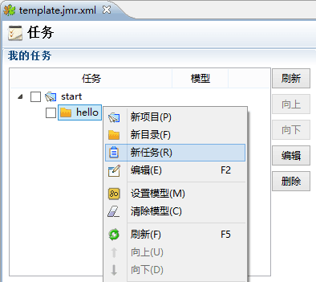
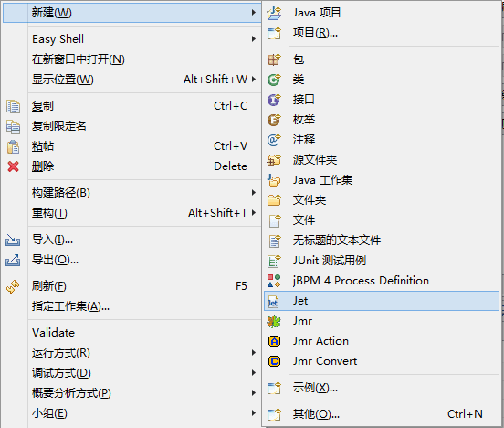
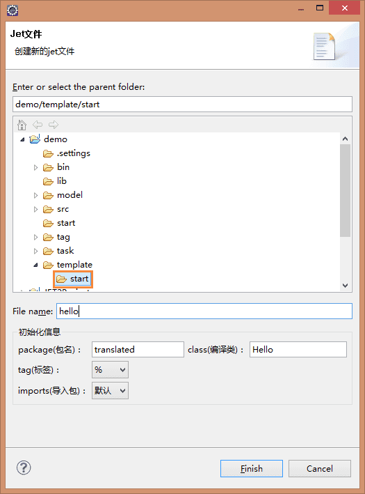

我们通过一个Hello Jmr的例子来说明, 概括起来只要3步：
1、编写模板
2、设置任务
3、运行生成
1）在需要创建文件的位置，点击右键，或者在菜单->文件(file)；然后点击新(New)，选择Jmr，或者在其它（Other）找到JMR目录下也有。
2）例子中，输入文件名template。
3）jmr文件创建成功。
4）打开文件，右键依次新建项目，新建目录。
5）新建任务。

6）新建完成后的样子，这个任务因为是刚新建的，内容还没有填写完善，所以有个“错误”标识，接下来我们就要新建模板和设置生成文件来完善这个任务。
1）在你需要创建模板的目录右键 新(New)，选择Jet，或者在其它（Other）找到JMR目录下也有。

2）例子中，输入文件名hello。

3）模板文件创建成功。
4）在模板中写入以下内容：
Hello Jmr!
<%out.write("Hello Jmr!");%>
<%="Hello Jmr!"%>
<get value="'Hello Jmr!'"/>
这几种写法的结果都是生成"Hello Jmr!"字符串。
有了模板后，我们现在可以开始配置任务了。
点击运行后，在“运行”视图中，会显示运行任务的信息。
点击打开后，我们可以看到生成的文件。
对比下模板和生成的内容。